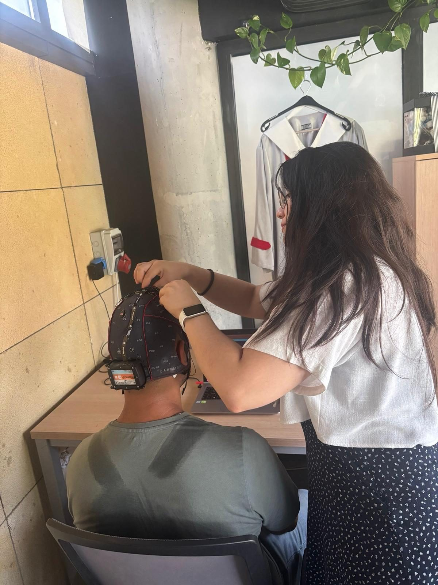
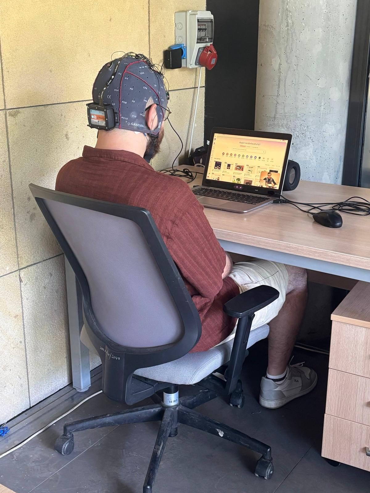
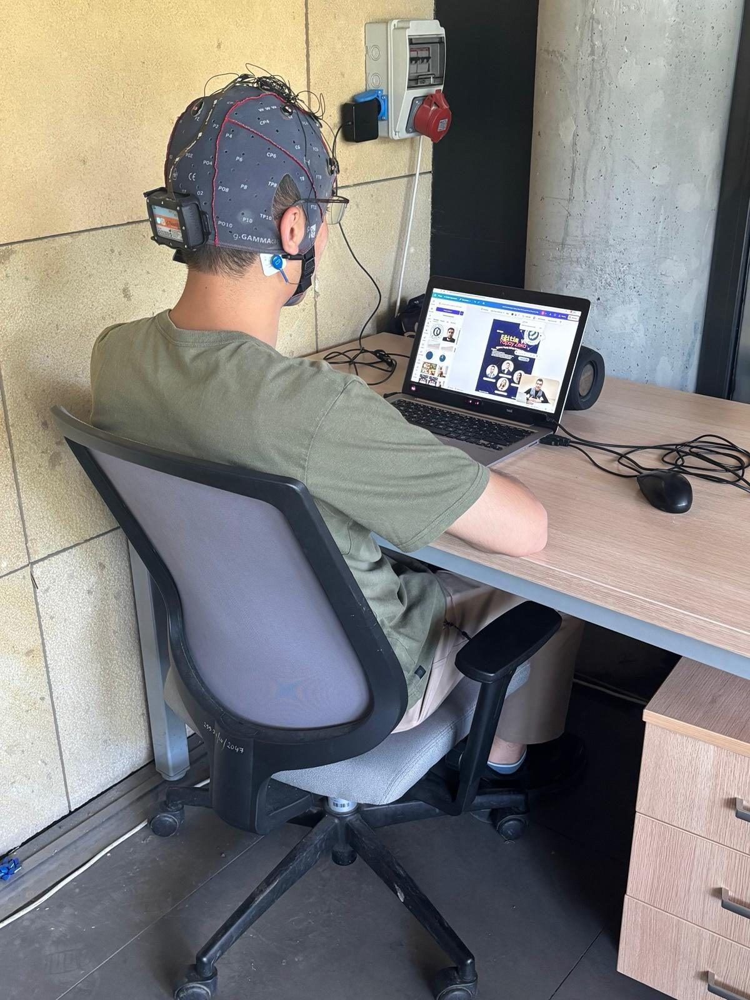
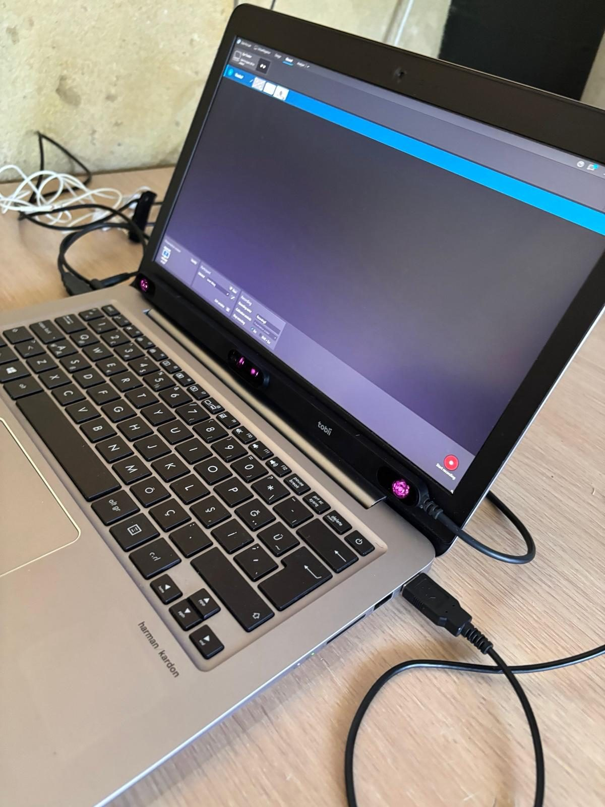
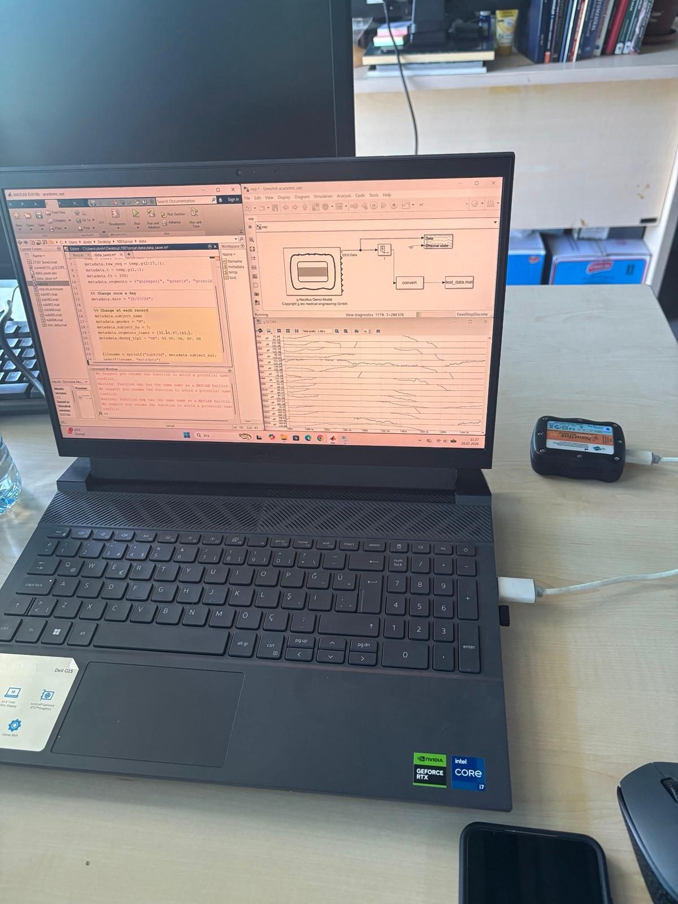

Pilot Uygulama Tamamlandı
Proje kapsamında geliştirilen çoklu ortam öğrenme materyallerinin ve deneysel veri toplama sürecinin uygulanabilirliğini değerlendirmek amacıyla pilot uygulama gerçekleştirilmiştir.
Pilot uygulamada, öğretici türü ve duygusal ifade açısından farklılaşan dört farklı video materyali kullanılmıştır. Materyaller; gerçek insan ve canlandırılmış sanal insan öğreticilerin pozitif ve negatif duygusal ifadeler sergilediği dört farklı koşulu temsil etmektedir.
Pilot çalışmaya 8 lisans öğrencisi katılmış ve her bir video koşulu iki öğrenci tarafından izlenmiştir. Öğrencilerin materyalleri izlemeleri sırasında 16 kanallı EEG sistemi ve göz izleme teknolojisi kullanılarak beyin sinyalleri ve göz hareketleri eş zamanlı olarak kaydedilmiştir.





Pilot uygulama kapsamında yalnızca veri toplama sürecinin teknik uygulanabilirliği değil, aynı zamanda farklı öğretici türü ve duygusal ifade koşullarına verilen nörofizyolojik ve görsel dikkat tepkileri de ön inceleme kapsamında değerlendirilmiştir. İlk incelemelerde EEG kayıtlarında özellikle beta frekans bandındaki aktivitenin belirgin olduğu gözlenirken, göz izleme kayıtlarında farklı öğretici ve duygusal ifade koşullarına bağlı olarak görsel dikkat ve bakış örüntülerinde farklılıklar gözlenmiştir.
Bu bulgular, pilot uygulamanın sınırlı katılımcı sayısı nedeniyle ön bulgular olarak değerlendirilmekte ve istatistiksel olarak genellenebilir sonuçlar olarak yorumlanmamaktadır. Bununla birlikte, pilot uygulama deney prosedürünün uygulanabilirliğinin değerlendirilmesine, EEG ve göz izleme teknolojilerinin eş zamanlı kullanımının test edilmesine ve veri toplama sürecinde gerekli teknik ve uygulamaya ilişkin düzenlemelerin yapılmasına katkı sağlamıştır.
Pilot uygulamanın tamamlanmasıyla birlikte proje kapsamında planlanan 80 katılımcılı ana deneysel çalışmaların gerçekleştirilmesine yönelik hazırlıklar sürdürülmektedir. Ana uygulama aşamasında elde edilecek EEG, göz izleme, öğrenme performansı, motivasyon ve duygusal durum verilerinin birlikte değerlendirilmesiyle, öğrenenlerin farklı öğretici ve duygusal ifade koşullarındaki öğrenme deneyimlerinin daha kapsamlı biçimde incelenmesi hedeflenmektedir.